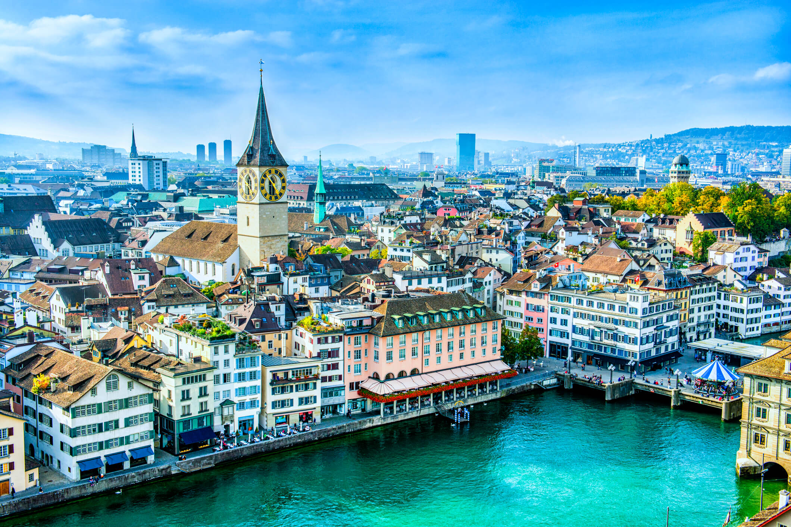
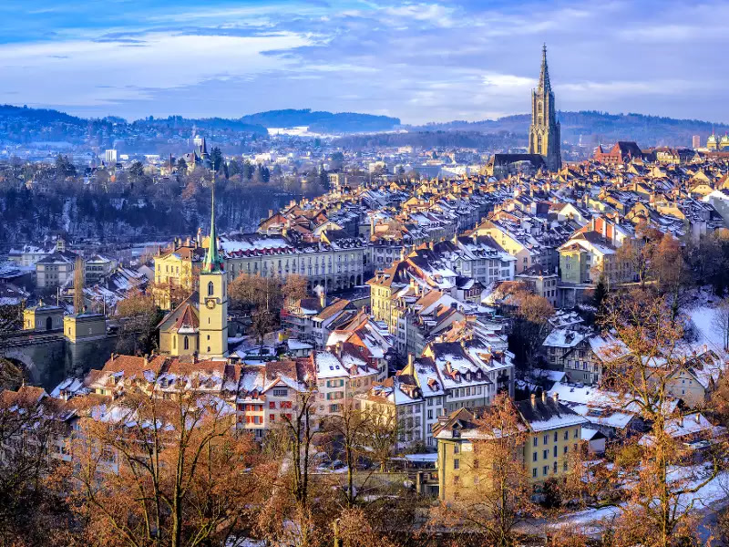
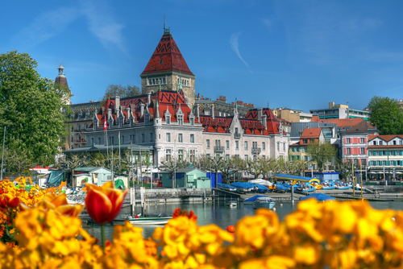
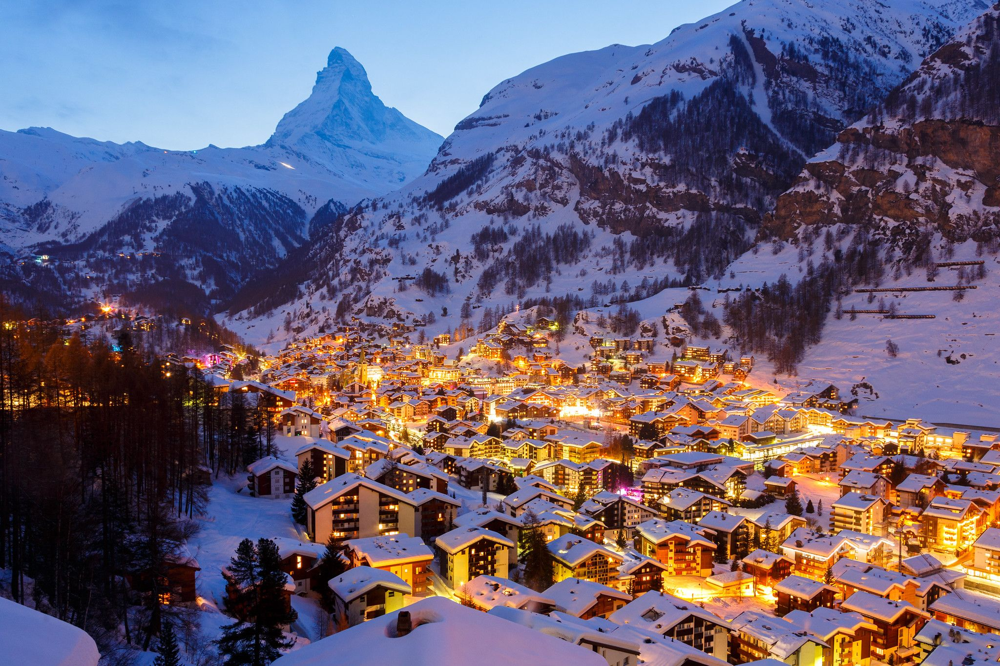
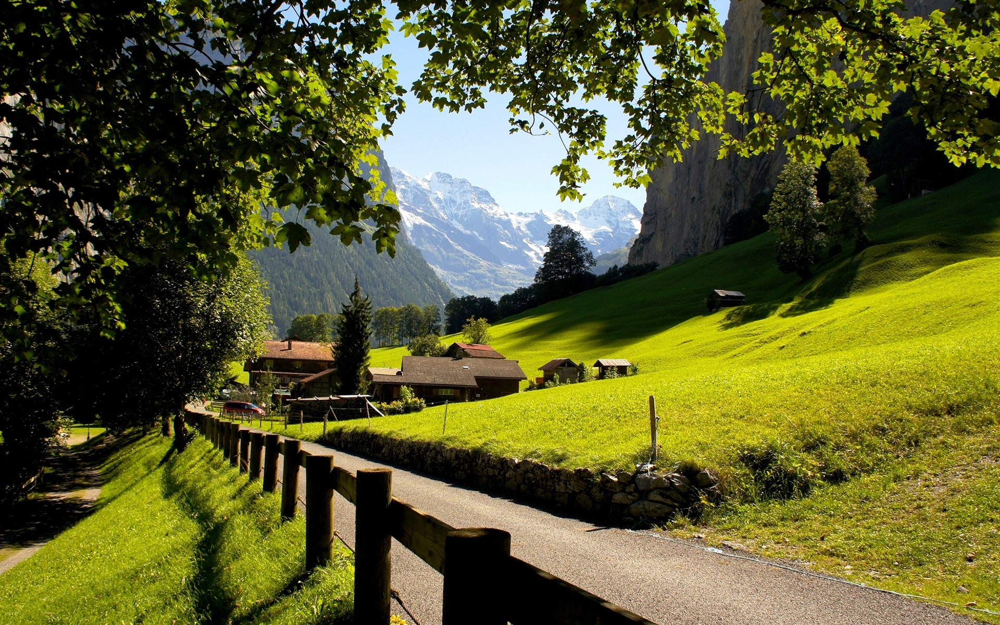

Zúrich
 Zúrich es la capital cultural y financiera de Suiza. Cuenta con los mejores museos, el principal teatro de ópera de Suiza y, además, increíbles paisajes. Zúrich ha sido catalogada como la ciudad con mayor calidad de vida del mundo durante varios años. Se encuentra próxima a los Alpes suizos, razón por la cual si planeas visitarlos, Zúrich se te hará un destino de paso ideal, además de una ciudad pintoresca y hermosa que debes conocer.
Berna
Berna es la capital política de Suiza: todas sus grandes instituciones están en Berna. Pero, además, Berna es una de las pocas ciudades en el mundo declaradas como Patrimonio de la Humanidad por la Unesco. Berna es una de las ciudades de Suiza más hermosas. Está cubierta y rodeada por colinas y atravesada por el río Aere. Es un lugar histórico, con calles empedradas que forman su fabuloso casco medieval y que nos hablan de la historia de hace siglos que sigue presente en nuestra vida cotidiana.
Ginebra
Entre las ciudades de Suiza, Ginebra es probablemente una de las más conocidas. Es la ciudad de la paz y de los relojes de lujo, pero no se queda solamente en ello. Basta que entres a la ciudad para que lo notes, por ejemplo, en la imponente fuente Jet d’Eau, un chorro que se alza unos 140 metros hacia el cielo, y un símbolo irrefutable de esta hermosa ciudad. También está el lago de Ginebra, hermoso en su dulzura. Pero si lo quieres apreciar mejor tendrás que ir a la Catedral de San Pedro, desde cuyas torres el lago se abre en todo su esplendor.
Zermatt
Si vas a Zermatt en coche, tienes que tener en cuenta que en esta población solo se permite la circulación de vehículos eléctricos, así que si vas con un motor de combustión tendrás que aparcar en un pueblo cercano. Resuelto este problema, te podemos asegurar que Zermatt es uno de los destinos más preciosos que te puede ofrecer Suiza. Es un lugar perfecto para cruzar caminando, perdiéndote y encontrándote entre sus hermosas calles, subir por sus montes y enamorarte de la vista, o hacer una ruta senderista. Sin duda, Zermatt no es un lugar para quedarse quieto.
Lauterbrunnen
«Lauter Brunnen» ("solo fuentes") - el propio nombre del pueblo advierte sobre el carácter singular de este paisaje: en el valle Lauterbrunnental hay nada menos que 72 cataratas. Un monumento característico es el Staubbachfall, que cae casi 300 metros a la profundidad desde una pared rocosa impresionante, una de las cataratas de caída libre más grandes de Europa. El poeta Johann Wolfgang von Goethe, que visitaba el valle en 1779, se hizo inspirar por las masas de agua, escribiendo el poema "Canto de los espíritus sobre las aguas".
Lucerna

Ubicada ante un impresionante panorama alpino se halla Lucerna, la puerta de entrada a la Suiza Central, a orillas del Lago de los Cuatro Cantones. Gracias a sus atracciones, sus atractivas tiendas, su ubicación única junto al lago y las montañas de excursión cercanas Rigi, Pilatus o Stanserhorn, la ciudad es destino de numerosos grupos de turistas y viajeros individuales que atraviesan Suiza.